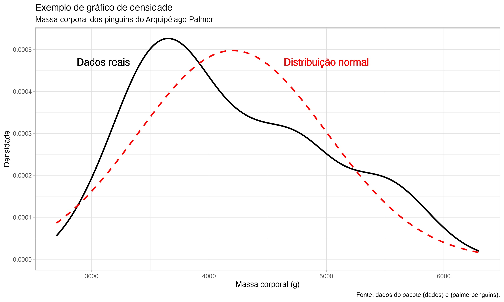
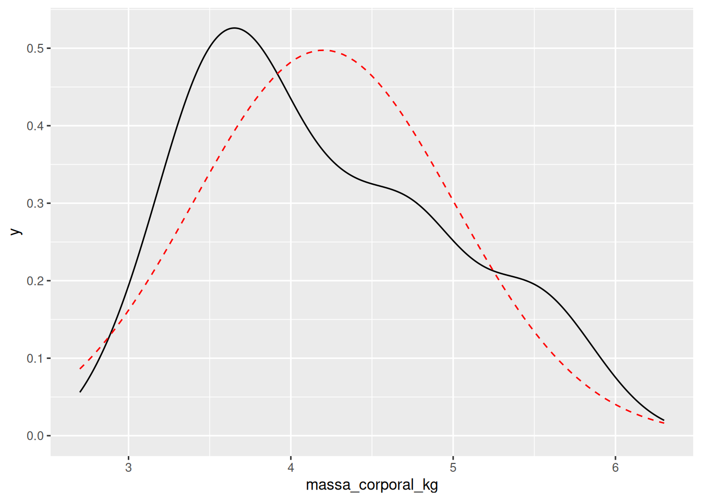

install.packages("dados")
install.packages("tidyverse")Introdução
Ao trabalhar com análise de dados, um dos gráficos mais comuns que utilizamos é o gráfico de densidade, que nos permite observar a distribuição de uma variável contínua. No entanto, às vezes é útil comparar essa distribuição “real” com uma distribuição normal1, para verificar o quão próximo os dados estão dessa curva teórica.
O objetivo deste post não é fazer uma explicação sobre o que é uma distribuição normal. Caso você não esteja familiarizado com o conceito, esse material pode ajudar.
Neste post, vou mostrar como adicionar uma curva normal simulada sobreposta ao gráfico de densidade de uma variável contínua.

Nota
Esse post foi escrito a partir de uma dúvida que recebi alguns meses atrás! Na época eu respondi, e a resposta ficou guardada em um script. Decidi transformá-la em um post para compartilhar com outras pessoas também. Espero que seja útil!
Passo 1: Carregar os pacotes necessários
Antes de qualquer coisa, vamos garantir que os pacotes necessários estão carregados. Neste caso, utilizaremos os pacotes ggplot2 (que faz parte do tidyverse) e os dados sobre os pinguins de Palmer, que estão disponíveis no pacote dados.
Caso não tenha esses pacotes instalados, você pode instalar executando o código abaixo:
Carregando os pacotes:
Passo 2: Criar o gráfico de densidade
Agora, vamos plotar a distribuição da massa corporal dos pinguins utilizando a função geom_density(), que gera a curva de densidade dos dados.
pinguins |>
ggplot() +
aes(x = massa_corporal) +
geom_density()Warning: Removed 2 rows containing non-finite outside the scale range
(`stat_density()`).Essa visualização já nos fornece uma visão geral da distribuição dos dados de massa corporal. Agora, vamos para o próximo passo: adicionar a curva normal sobre essa distribuição.
Modo 1: Com a função stat_function()
Passo 3: Adicionar a curva normal ao gráfico
A função stat_function() permite adicionar uma função estatística ao gráfico. Neste caso, vamos utilizar a função de densidade da distribuição normal (dnorm()) no argumento fun (fun = dnorm), e ajustar a cor da linha para vermelho.
pinguins |>
ggplot() +
aes(x = massa_corporal) +
geom_density() +
stat_function(fun = dnorm,
color = "red",
linetype = "dashed")Warning: Removed 2 rows containing non-finite outside the scale range
(`stat_density()`).Perceba que a curva que foi criada está “achatada”. Ela não está ajustada aos dados, pois não informamos os parâmetros da distribuição normal (média e desvio padrão), e a função dnorm() foi executada utilizando os valores padrão (média = 0 e desvio padrão = 1).
Portanto, precisamos calcular esses valores a partir dos dados e utilizá-los para simular a curva normal.
Agora, vamos adicionar a curva normal ao gráfico, informando os parâmetros da distribuição normal. O código abaixo pode parecer estranho pois usamos o ~ para indicar que estamos passando uma função anônima para o argumento fun da stat_function().
pinguins |>
ggplot() +
aes(x = massa_corporal) +
geom_density() +
stat_function(
fun = ~ dnorm(x = .x, mean = media, sd = desvio_padrao),
color = "red",
linetype = "dashed"
)Warning: Removed 2 rows containing non-finite outside the scale range
(`stat_density()`).
Aqui está! Agora temos um gráfico de densidade da massa corporal dos pinguins com a curva normal sobreposta. Isso nos permite visualizar a distribuição real dos dados e compará-la com a distribuição normal.
Modo 2: Simulando a curva normal
Outra forma de adicionar a curva normal ao gráfico é simulando a distribuição normal com base nos dados.
No dia-a-dia, é mais comum utilizarmos a função stat_function() para adicionar a curva normal.
Mas o legal dessa abordagem é que podemos entender o passo a passo de como a curva normal é simulada, e como os parâmetros da distribuição normal são calculados a partir dos dados.
Vamos ver como fazer isso a seguir, continuando a partir do passo 2.
Passo 3: Calcular os parâmetros da distribuição normal
Para simular uma curva normal, precisamos calcular a média e o desvio padrão da massa corporal dos pinguins. Com esses valores, podemos simular a distribuição normal que melhor se ajustaria a esses dados.
Aqui, a variável media armazena o valor médio da massa corporal, e desvio_padrao captura a variação dos dados em torno dessa média. Definimos um intervalo que vai do valor mínimo ao valor máximo dos dados, para simular nossa curva normal.
Passo 4: Simular a curva normal
Agora que já temos a média e o desvio padrão, podemos simular a curva normal usando a função dnorm(). Ela calcula a densidade da distribuição normal para cada valor do intervalo que definimos.
Aqui, criamos um dataframe (df_normal) que contém a densidade simulada para cada valor da massa corporal. Esse dataframe será utilizado para adicionar a curva ao nosso gráfico.

Passo 5: Adicionar a curva normal ao gráfico
Agora que temos o gráfico de densidade dos dados e a curva normal simulada, vamos sobrepor as duas visualizações em um único gráfico. Utilizamos geom_line() para adicionar a linha da curva normal e ajustamos a transparência (com alpha) e a cor da linha.
pinguins |>
ggplot() +
aes(x = massa_corporal) +
geom_density() +
geom_line(
data = df_normal,
aes(x = massa, y = density),
color = "red",
linetype = "dashed"
)Warning: Removed 2 rows containing non-finite outside the scale range
(`stat_density()`).
Agora temos um gráfico que mostra a distribuição real da massa corporal dos pinguins, comparada a uma curva normal simulada, representada pela linha vermelha tracejada!
Conclusão
Neste post, mostrei como adicionar uma curva normal simulada sobreposta a um gráfico de densidade de uma variável contínua. Você conhece outras formas de fazer isso? Compartilhe nos comentários!
Gostaria de agradecer ao Julio Trecenti por me fazer sugestões para melhorar o post!
Se você gostou deste post, você pode me acompanhar nas seguintes plataformas:
Youtube (atualmente não tem muita coisa por lá, mas pretendo começar a postar vídeos em breve!)
Notas de rodapé
Conhecida também como “curva de sino”, “curva normal”, “gaussiana”.↩︎